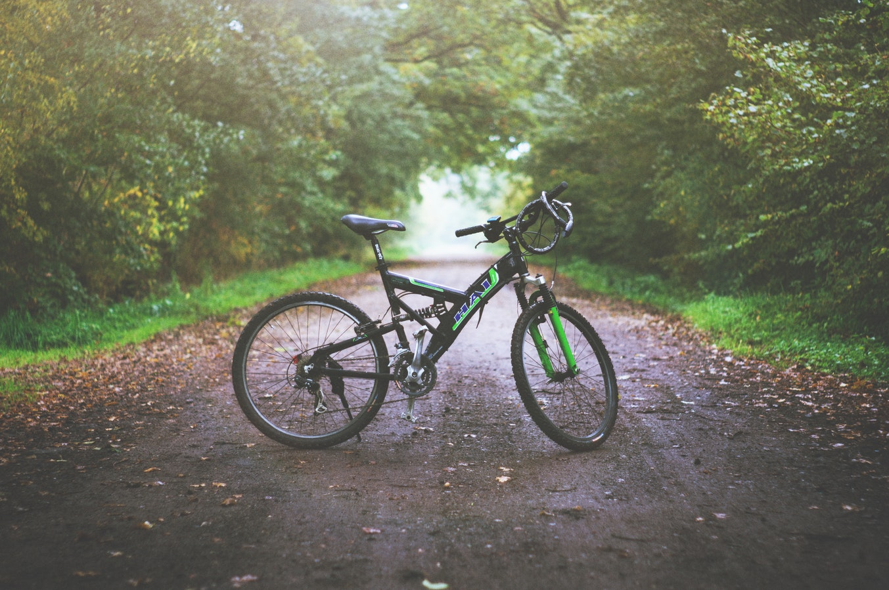
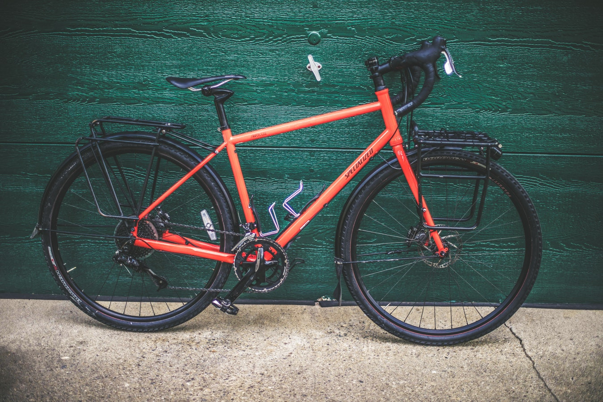

Schwinn 700c Men's DSB Hybrid Bike
$249.00
- Rigid aluminum frame with front suspension fork is responsive and agile
- 21-speed Shimano EZ-Fire trigger shifters with a Shimano rear derailleur for quick and smooth gear changes
- Front and rear mechanical disc brakes offer crisp and powerful stopping in tough conditions
- Light and strong double wall alloy rims provide added durability
- Schwinn alloy crank supplies optimal gearing
- Tool-free adjustable seat post for easy height adjustments
- Rider height: 5'4" - 6'2"
700C Mongoose Hotshot Men's Bike, Orange
$99.00
- Rigid urban-style steel frame and fork is built for versatile riding
- 7-speed twist shifters let you conquer hills with ease
- Front and rear linear pull brakes provide quick, crisp stops and steady speed control
- Light and strong alloy rims provide added durability for everyday riding
- Durable steel 3-piece crank offers optimal gearing on commutes
- Tool-free adjustable seat post for easy height adjustments
- Rider height: 5'4" - 6'2"
700c Susan G. Komen Courage Women's Road Bike

$129.00
- Sturdy steel frame
- 21-speed drivetrain with Shimano rear derailleur and easy twist shifting
- High-profile alloy wheel set
- Comfy springer style saddle
- Strong linear pull brakes
- Age range: 15 years and up